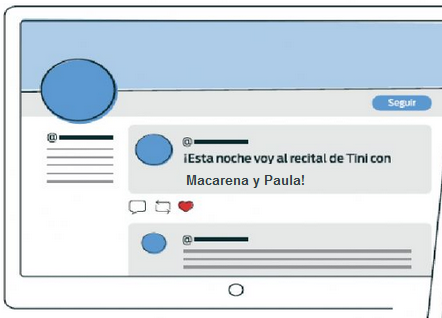

La innovación tecnológica nos ha llevado a un cambio absoluto en la forma de entender las relaciones sociales, al ampliar los círculos sociales y permitir el acceso a informaciones, personas e ideas de la más variada naturaleza.
Ya sabemos, como acabamos de ver, que este cambio ha llegado al convertirse la aplicación de la Computación en el medio para la generación, transmisión e intercambio de la información. Por eso ha sido fundamental en el desarrollo de las sociedades y en el crecimiento de las economías de los países.
¡Conozcamos ahora sus ventajas e inconvenientes y cómo evolucionará!
1. El año 0 de una nueva sociedad
Nuestras vidas cotidianas han sufrido un profundo cambio por la repercusión del rápido desarrollo tecnológico que acabamos de ver. Estas son las implicaciones a nivel microscópico de la Computación. A diferencia de tecnologías de comunicación de conocimiento anteriores -cassette, prensa, diapositivas, video- la computadora tiene un potencial técnico menos restringido, la computadora conlleva el potencial de impactar a la sociedad en su conjunto.
Estos cambios provocados por las aplicaciones de la computación revolucionan nuestra vida social, laboral, económica, sanitaria y nuestro aprendizaje, hasta tal punto que ya no entendemos cómo se podía vivir en la sociedad anterior sin estas tecnologías. Constantemente os proponen desafíos en la sociedad donde os desenvolvéis haciendo que, al afrontarlos, cada uno por sí mismo va cambiando el mundo.
Comprobadlo en esta reflexión y profundizad en ella con las dos cuestiones que se plantean abajo:
Nos preguntamos...
¿Por qué creéis que hay iconos que aparecen varias veces?
¿Conocéis los logotipos de todas las aplicaciones que aparecen en las imágenes? Intentad averiguar las que te faltan y completadlo en colaboración.
2. Impacto social y económico de la Computación
Veamos las ventajas e inconvenientes de esta revolución tecnológica. Selecciona si cada hecho propuesto es una ventaja o un inconveniente y reflexiona sobre por qué lo es. Luego conocerás la explicación de por qué es así y te daremos las razones de base.
Como te indicábamos arriba, vamos a justificas las ventajas e inconvenientes del impacto social y económico que ha producido la Computación:
Comercio electrónico (E-commerce)
El comercio electrónico es una ventaja tecnológica que nos ha permitido:
Acceso a una gran gama de productos, más de los que se pueden ofrecer físicamente en una tienda.
Reducción de precios debido a los menores costes de vender a través de un portal de Internet.
Disponibilidad de medios de pago electrónico seguros.
Deslocalización del punto de compra-venta, ofreciendo bienes de cualquier lugar del mundo a cualquier hora.
Aumento del consumo de bienes de segunda mano mediante aplicaciones que ofrecen productos C2C, revirtiendo esto en favor del planeta en materia de reciclaje.
Brecha digital
Hoy en día, quizás no te des cuenta porque muchos hogares disponen de conexión a Internet, hay una parte de las poblaciones del mundo que no pueden acceder a la interconectividad de la Red porque no disponen de medios económicos, de infraestructuras, de conocimientos o de accesibilidad. Es lo que se llama Brecha Digital y provoca una situación de desigualdad entre quienes tienen acceso a Internet y quienes no lo tienen.
Tecnoadicciones
Los dispositivos que nos permiten conectarnos a Internet, que han pasado a formar parte de nuestra vida diaria, han traído consigo también usos abusivos o inadecuados. Concretamente, la adicción a las nuevas tecnologías es una conducta por la que una persona no puede realiza sus actividades diarias sin estar conectado a Internet, al teléfono móvil o a los videojuegos en todo momento, perdiendo así el control de su uso y de su propia vida. Pueden causar síndrome de abstinencia y dependencia.
Telemedicina
La Telemedicina ha permitido la prestación de los servicios de salud a distancia,optimizando así los espacios y los costes derivados, con respecto a la medicina tradicionamente presencial.
Protección de la propiedad intelectual
En Internet hay que tener cuidado con el uso de imágenes, artículos, vídeos, audios,...sin la autorización de las personas que los crearon. Las prácticas más comunes en estos casos son el plagio y la piratería.
Educación virtual
Es una ventaja porque nos proporciona un m-etodo de enseñanza on-line con el apoyo de Internet. Proporcion flexibilidad y autonomía permitiendo acceder a las plataformas donde se desarrollan los cusos cuando y donde se quiera.
C2C (Consumer-to-consumer) es la abreviatura utilizada en comercio electrónico para definir una estrategia de cliente a cliente. Se utiliza este término para definir un modelo de negocio en la red que pretende relacionar comercialmente el usuario final con otro usuario final.
10. ¿Qué elementos intervienen en la brecha digital?
Vamos a profundizar en los factores que intervienen en la brecha digital: Para que la sociedad que conforma un país no sea víctima de la brecha digital antes vista, es necesario que se dé la combinación de tres elementos. ¿Sabrías seleccionar a cuáles corresponden a partir de las definiciones dadas?
Definiciones:
El acceso a Internet, la telefonía fija, la telefonía móvil, etc.
Poder hacer uso de las infraestructuras (los elevados precios serían un obstácutlo).
Tener los conocimientos necesarios para el uso de las tecnologías.
Selecciona entre los siguientes los tres elementos a los que corresponde cada una de las definiciones dadas: Estudios universitarios. Infraestructura. Red empresarial. Accesibilidad. Habilidades.
La clave
Como seguramente has averiguado, los tres factores son: Infraestructura, Accesibilidad y Habilidades.
Además, debes saber que la brecha digital creada por la carencia de infraestructuras y su accsibilidad ha sido llamada primera brecha digital. La originada por la falta de habilidades debido a la escasa preparación y conocimientos ha sido llamada segunda brecha digital.
11. ¡Yo propongo reducir la brecha digital!
Vamos a ver qué ideas se nos ocurren para que en un futuro se pueda reducir esta brecha digital en los países que la sufren. Por equipos:
Realizad en primer lugar un listado con los elementos relacionados con la infraestructura, la accesibilidad y las habilidades que detectáis que son necesarios para hacer uso de Internet y su software en tu día a día. Comentadlo entre equipos y completad.
Buscad tres ideas de proyectos que podrían ayudar a disminuir esta brecha digital.
¿Necesitáis un poco de ayuda?
Consultad las web de estas ONGs que trabajan en ese objetivo para recopilar ideas:
Ayuda en acción - Fundación Cibervoluntarios - Digital Future Society
Vistos los cambios a los que ha dado lugar la aplicación de la Computación, vamos a intentar vislumbrar cuál será el futuro: cómo evolucionará la sociedad y los cambios que vienen.
12. Socializando en los nuevos tiempos
Uno de los cambios más importantes que sin duda ha traído la computación son las aplicaciones de Redes Sociales. Han cambiado por completo la manera de interactuar, conocer, hablar, compartir, etc.
Pero, como sabes, el uso de las Redes Sociales también traen nuevas situaciones de riesgo y necesidades futuras de protección frente a ellos. Reflexiona con las siguientes publicaciones de Redes Sociales:
Situaciones
Publicación 1
Publicación 2
Publicación 3

Publicación 4
Reflexiona con la clase
¿Qué tipo de información nos da cada imagen?
¿Cuáles son los riesgos que podrían originarse a partir de cada una de las situaciones?
En estos casos: ¿la información se comparte voluntariamente?
¿Tenemos control total sobre la información que publicamos en Internet? Debatid sobre ello.
13. Tendencias evolutivas
Como acabas de ver, el auge de las Redes Sociales ha creado una necesidad de interconexión tecnológica entre las personas que influye en el desarrollo futuro de los dispositivos electrónicos computacionales, creando una constante evolución de los dispositivos a productos más ligeros. Además, la incorporación de muchas y nuevas capacidades a tamaños cada vez menores con sistemas operativos tan evolucionados que se comunican prácticamente de manera directa con las personas, hacen que en el futuro se vislumbren funcionalidades como las siguientes.
Trabajo colaborativo en la web
Nuevas soluciones y aplicaciones que permitirán trabajar en red en colaboración virtual total con las personas de nuestro equipo de trabajo.
Dispositivos que interactúan
Efectivamente: nos referimos a dispositivos ¡que interactúan entre sí sin la colaboración de las personas!
Dispositivos y aplicaciones futuristas
Nos llegarán nuevos diseños de dispositivos móviles más reducidos, que nos acompañaran como complementos o incluso en la ropa,... con aplicaciones que utilizarán la conectividad a Internet y la interconectividad entre dispositivos unida a la realidad aumentada o a la realidad virtual, etc.
Nuevas posibilidades de comercio en la red
Mediante el desarrollo de los nuevos medios de pago electrónico como el pago a través de dispositivos móviles o las monedas virtuales, se están programando y tendremos a nuestra disposición nuevas posibilidades de compra on-line con mecanismos de seguridad más poderosos.
Seguridad de contenidos en las Redes Sociales
Los directivos de empresas como Facebook auguran un cambio hacia una red social más privada. Zuckerberg defiende la creación de redes más pequeñas y más cerradas, donde la actividad sea más segura, más allá de las publicaciones públicas. En un principio las redes sociales querían que toda la actividad fuese pública, pero esto ha cambiado.
Todo apunta a que se desea conseguir intimidad de nuevo, enfatizándose más aún las interacciones privadas.
Además, existirán nuevas normas y legislación que protejan a las personas en temas de seguridad en redes sociales. Se trabajará en establecer qué contenidos pueden publicarse en las redes sociales y de quién sería la responsabilidad, tratando siempre de mantener un balance entre libertad de expresión y proteger la privacidad y seguridad de los usuarios.
El futuro que necesitamos
Tras aprender que los cambios que han tenido lugar en nuestra sociedad por la innovación tecnológica derivada de la Computación, vemos que se hace necesaria la búsqueda de un desarrollo sostenible en los cambios futuros de manera que, además de lograr avances económicos y sociales, se pueda conseguir una homogeneización sociocultural.
Además, no debemos perder de vista que aunque tengamos acceso a la ingente cantidad de información que hay en Internet deberemos mantener ahora y en el futuro una reflexión crítica sobre ella que nos permita seleccionar la información útil y fiable diferenciando los datos objetivos de las opiniones o interpretaciones subjetivas.
14. ¿Qué has aprendido?
En los puntos siguientes se recogen los objetivos conseguidos de lo visto en estos dos últimos apartados, ¿los tienes?:
Sé diferenciar entre Información y Conocimiento.
Puedo indicar cómo la Computación ha influido en la innovación tecnológica y ha ayudado a crear la Sociedad del Conocimiento.
Identifico los aspectos positivos y negativos de los cambios sociales a los que ha dado lugar el desarrollo de la Computación.
 La innovación tecnológica nos ha llevado a un cambio absoluto en la forma de entender las relaciones sociales, al ampliar los círculos sociales y permitir el acceso a informaciones, personas e ideas de la más variada naturaleza.
La innovación tecnológica nos ha llevado a un cambio absoluto en la forma de entender las relaciones sociales, al ampliar los círculos sociales y permitir el acceso a informaciones, personas e ideas de la más variada naturaleza.

 Vistos los cambios a los que ha dado lugar la aplicación de la Computación, vamos a intentar vislumbrar cuál será el futuro: cómo evolucionará la sociedad y los cambios que vienen.
Vistos los cambios a los que ha dado lugar la aplicación de la Computación, vamos a intentar vislumbrar cuál será el futuro: cómo evolucionará la sociedad y los cambios que vienen.